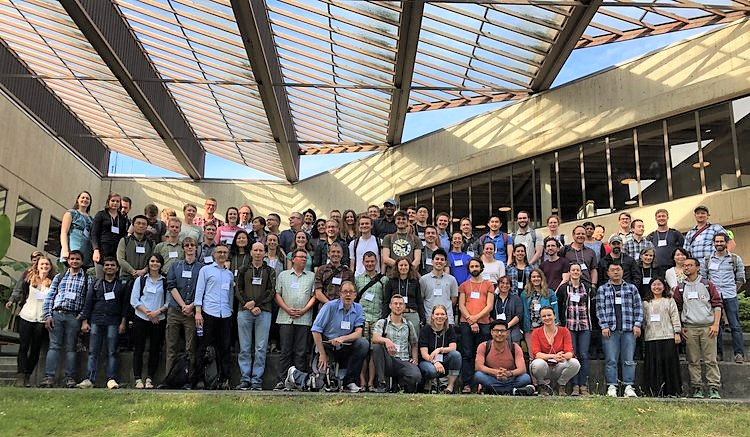

<!-- One -->
<section id="one" class="wrapper style1 special">
	<div class="inner">
		<header class="major">
			<h2>ABOUT ICESat-2 Hackweek</h2>
			<p>	
				The ICESat-2 Hackweek is a 5-day collaborative learning experience designed to coalesce people and resources around 
				exploring, creating, and promoting effective computation and analysis workflows 
				for the large and complex data returned by the ATLAS sensor on board NASA's ICESat-2 satellite. 
				We will bring together data managers, maintainers, and users to teach each other about 
				open science practices and software during tutorials and contribute to centrally accessible, shareable tools during project work. 
				Our vision includes creating an inclusive, open space that fosters networking, innovation, and sharing ideas.
				<p>
					
				</p>
				<!-- Its objectives are to:
				<ul style="text-align: left">
					<li>objective 1
					</li>
					<li>objective 2
					</li>
				</ul> -->
			 </p>
			<p>
				<a href="https://uwhackweek.github.io/hackweeks-as-a-service/mission.html">Learn about "hackweeks".</a>
			</p>
			<p>Check out articles on our 2019 hackweek: <a href="https://www.nccs.nasa.gov/news-events/nccs-highlights/icesat2-hackweek">from NASA</a> and <a href="https://glacierhub.org/2019/09/17/icesat-2-hackweek-tackles-the-big-data-of-earths-glaciers/">a past participant</a>!</p>
			<p>Explore tutorials from our <a href="https://github.com/ICESAT-2HackWeek/ICESat2_hackweek_tutorials">2019 (in person)</a> and <a href="https://github.com/ICESAT-2HackWeek/2020_ICESat-2_Hackweek_Tutorials">2020 (virtual)</a> Cryospheric Science Themed ICESat-2 Hackweeks</p>
			<p><a href="https://icepyx.readthedocs.io/en/latest/">Learn more about icepyx</a>, our community open source software for working with ICESat-2 data!</p>
		</header>
	</div>
</section>
